8월25일 ~ 9월1일
LYDD에 머물면서 KENT & EAST SUSSEX 지역여행
아침10시~11시쯤 일어나서 눈뜨자마자 커피마시고 미적거리다
오후1시버스타고 근처 해변가라던가 휴양도시 돌믄서
맛난거먹구 오후6시에 귀가하는
(그리고 숙소돌아와서 다시 밥먹구 커피마시믄서 뒹굴뒹굴^^)
그야말로 초초 게으름뱅이 노세노세 여행
일명 노인관광^^;;;;;;
일주일 내리 식단이 생선 빵종류 감자감자감자 라서ㅡㅡ;;;;
1일날 집에오자마자 김치 왕창넣고 라면끓여먹었다^^;;;;
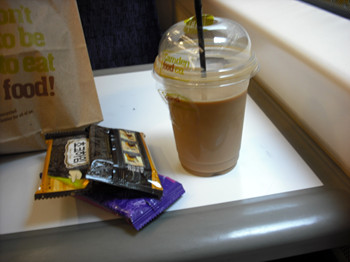
기차역에서 출발은 커피와함께
Camden food co. 아이스라떼 왤케 달아 ;ㅂ;
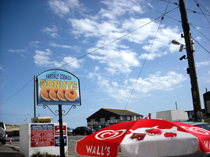
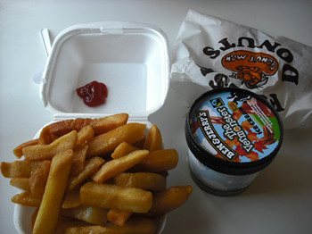
26일 Camber Sands
이날 바람이 너무심하게 불어서
온몸을 모래로 얻어맞는 느낌이었음^^;;;;;
휴양지/마켓등에서 자주 보이는 donuts 이랑 칩스 아이스크림
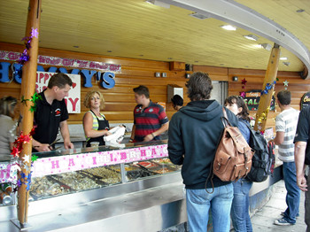
27일 Folkestone
Fish Market ;ㅂ; 만쉐!!!
섬나라인데도 참 해산물 먹기가 애매한 영쿡
신선한 해산물이 잔뜩
게다가 가격도 엄청싸다 ;ㅂ;
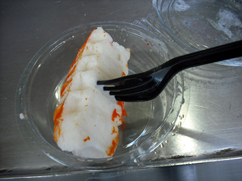
통통한 Lobster Tails 요게 1파운드
칠리소스에 찍어먹으니까 무지 맛나다 XD
이번여행중 젤 맛났던거 나중에 한번 더 사먹었다 ^^*
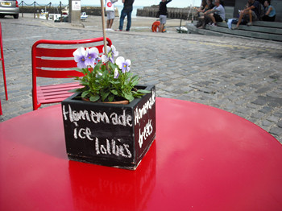
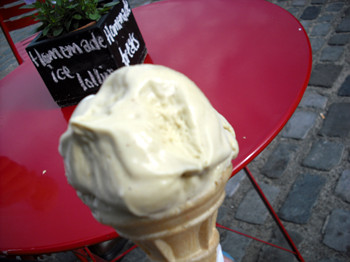
일주일 내리 하루도 안빠지고
칩스랑 아이스크림을 먹은거 같아 ㅡㅡ;;;;;
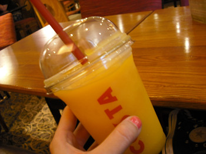
코스타 Mango & PassionFruit
올해여름은 정말 안덥고 비만내려서 ㅡㅡ;;;
요걸 주문할일이 거의 없었다;;;;
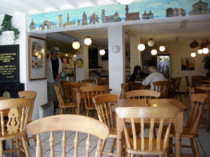
28일 Rye
이동네 엄청 귀여웠음
Local Tea shop도 무진장 많고
거리도 골목골목 다 이쁘다 ;ㅂ;
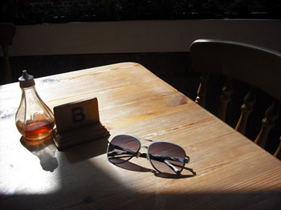
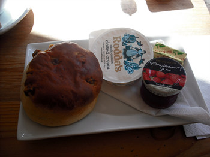
스콘을 먹어줘야한당 ㅎㅎㅎ
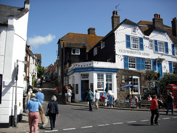
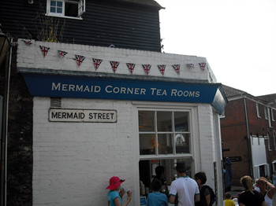
Mermaid street에 있는
Mermaid Corner Tea Rooms
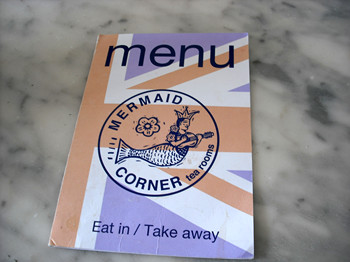
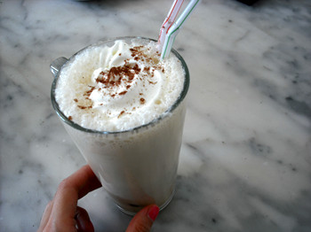
아이스커피 +_+
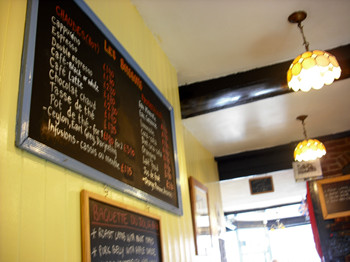
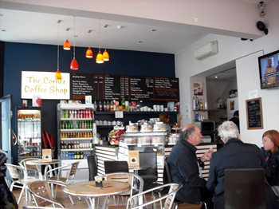
29일 Canterbury
2009년도에 방문하고 두번째
동네 쪼매난 Local cafe
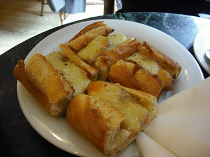
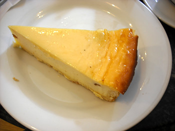
여기 치즈케키 맛났다 +_+
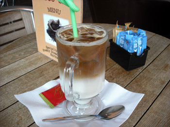
30일 Hastings
도착하자마자 아이스라떼부터 한잔 :D
커피는 중요하다 ←;;;;
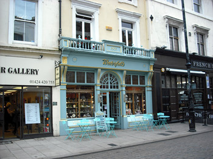
슬렁슬렁 동네구경하다가
가게가 넘 이뻐서 들어간곳
일층은 선물가게이구 이층은 카페
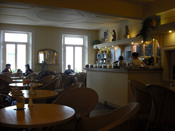
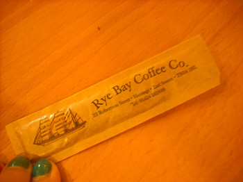
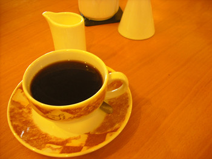
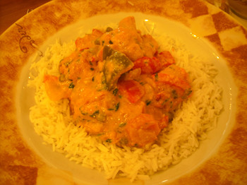
슬슬 쌀이고파서 카레주문했다
학교다닐때 생각나네 ^^
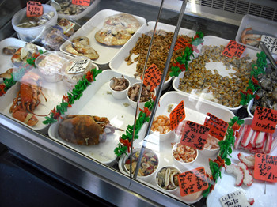
31일 Dungeness
또다시 들린 Fish Market 희희
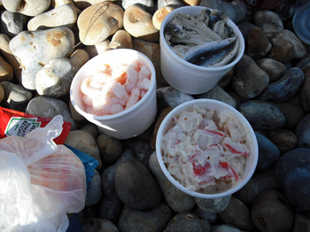
엔쵸비 오일+마늘에 절인거 / 새우 / crab 샐러드........?
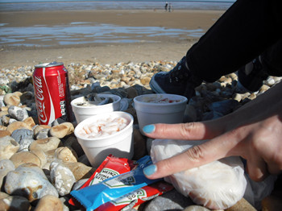
바다구경하믄서 뇸뇸
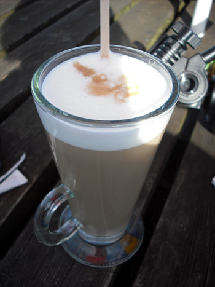
다시 커피마시구
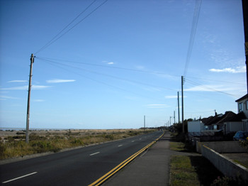
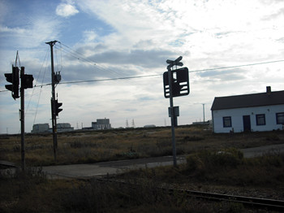
죽죽 걸어서 동네구경하고 사진도 찍고 펍으로 이동
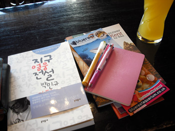
북꼬북꼬로부터 받은 책
지구영웅전설
이날 앉은자리에서 읽기시작해서 다 읽었다^^**
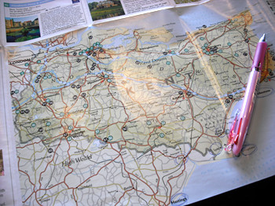
지도에 다녀온곳 표시도 하믄서 시간때우다가
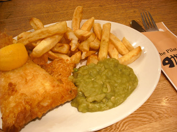
마지막날 저녁은 역시 Fish and Chips
이게 스몰사이즈다 ㅡㅡ;;;;;
미디움이랑 라지 사이즈가 상상이 안되는데;;;;;
바닷가 근처라 Fish and Chips 생선이 엄청 신선해요 빵끗~!!
이러는데
바닷가근처 = 횟집 이 공식인 나라에서 온 나는
신선한걸 왜 튀기냐고 ㅜㅜ ←요 생각뿐
굳이 이걸 튀겨서 먹겠다는 이 의지 ㅋㅋㅋㅋㅋㅋㅋㅋㅋ
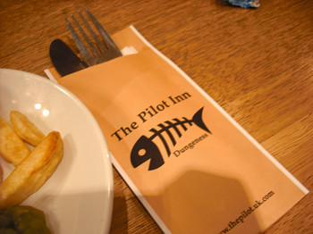
Dungeness 버스정류장 내리자마자 바로 보이는 펍
The Pilot Inn
로고 귀엽다 //ㅂ//
여기 음식 훈늉했음
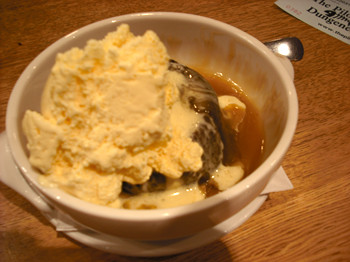
디저트 배는 항상 따로있다 +_+
Sticky Toffe Pud
따닷한 스폰지 푸딩에 아이스크림이랑 같이먹으니까
느므 맛나다 ㅜㅜ
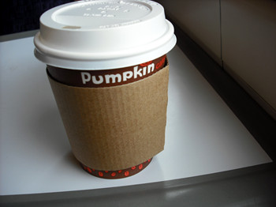
9월1일
돌아오는 기차안 역시 커피 :)
기차탈때는 커피가 손에 있어야한다 +_+
일주일동안 둥개둥개 잘 놀았다
글엄 다시 로동 복귀!!!